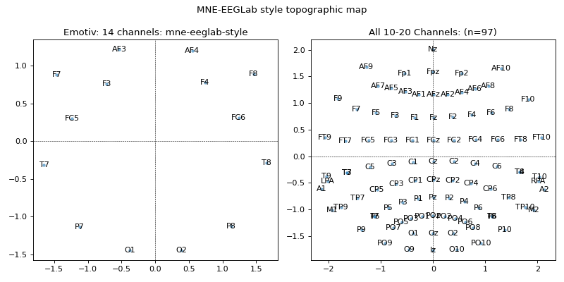
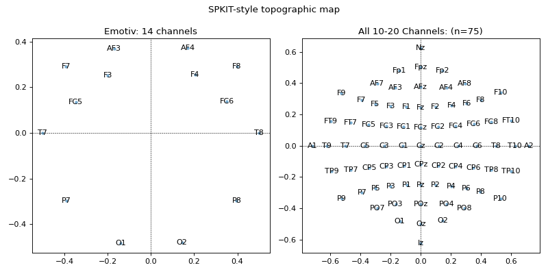
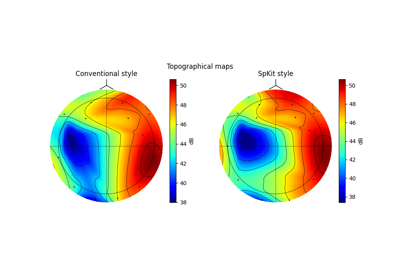

spkit.eeg.s1020_get_epos2d¶
- spkit.eeg.s1020_get_epos2d(ch_names, style='eeglab-mne', case_sensitive=False, reorder=False, clean_label=True, use_precomputed=True)¶
Get 2D projection points for given channel using 10-20 System
- Parameters:
- ch_names: list of str
list of channel names
e.g. ch_names = [‘AF3’,’F7’,’F3’,’FC5’,’T7’,’P7’,’O1’,’O2’,’P8’,’T8’,’FC6’,’F4’,’F8’,’AF4’]
- style: str {‘eeglab-mne’,’spkit’}, default= ‘eeglab-mne’
- case_sensitive: bool, default=False
ignoring the upper and lowercase name
- reorder: bool, default=False
if order of the position and channel is rearraged.
Deprecated since version 0.0.9.7: It doesn’t make sense to re-order the list.
- Returns:
- pos: 2d-array, size (nc,2)
- ch: channel names
as it is in standard file.
See also
References
Examples
#sp.eeg.s1020_get_epos2d import numpy as np import matplotlib.pyplot as plt import spkit as sp ch_names_emotiv = ['AF3','F7','F3','FC5','T7','P7','O1','O2','P8','T8','FC6','F4','F8','AF4'] pos1, ch1 = sp.eeg.s1020_get_epos2d(ch_names_emotiv) pos2, ch2 = sp.eeg.s1020_get_epos2d(ch_names_emotiv,style='spkit') ch_names_all = sp.eeg.presets.standard_1020_ch pos3, ch3 = sp.eeg.s1020_get_epos2d(ch_names_all) ch_names_spkit_all = sp.eeg.presets.standard_1020_spkit_ch pos4, ch4 = sp.eeg.s1020_get_epos2d(ch_names_spkit_all,style='spkit') plt.figure(figsize=(10,5)) plt.subplot(121) plt.plot(pos1[:,0],pos1[:,1],'.',alpha=0.5) for i,ch in enumerate(ch_names_emotiv): plt.text(pos1[i,0],pos1[i,1],ch,va='center',ha='center') plt.title('Emotiv: 14 channels: mne-eeglab-style') plt.axvline(0,lw=0.5,color='k',ls='--') plt.axhline(0,lw=0.5,color='k',ls='--') plt.subplot(122) plt.plot(pos3[:,0],pos3[:,1],'.',alpha=0.5) for i,ch in enumerate(ch_names_all): plt.text(pos3[i,0],pos3[i,1],ch,va='center',ha='center') plt.title(f'All 10-20 Channels: (n={len(ch_names_all)})') plt.axvline(0,lw=0.5,color='k',ls='--') plt.axhline(0,lw=0.5,color='k',ls='--') plt.suptitle('MNE-EEGLab style topographic map') plt.tight_layout() plt.show()
 plt.figure(figsize=(10,5)) plt.subplot(121) plt.plot(pos2[:,0],pos2[:,1],'.',alpha=0.5) for i,ch in enumerate(ch_names_emotiv): plt.text(pos2[i,0],pos2[i,1],ch,va='center',ha='center') plt.title('Emotiv: 14 channels') plt.axvline(0,lw=0.5,color='k',ls='--') plt.axhline(0,lw=0.5,color='k',ls='--') plt.subplot(122) plt.plot(pos4[:,0],pos4[:,1],'.',alpha=0.5) for i,ch in enumerate(ch_names_spkit_all): plt.text(pos4[i,0],pos4[i,1],ch,va='center',ha='center') plt.title(f'All 10-20 Channels: (n={len(ch_names_spkit_all)})') plt.suptitle('SPKIT-style topographic map') plt.axvline(0,lw=0.5,color='k',ls='--') plt.axhline(0,lw=0.5,color='k',ls='--') plt.tight_layout() plt.show()

Examples using spkit.eeg.s1020_get_epos2d¶

Release Highlights for spkit 0.0.9.7
Release Highlights for spkit 0.0.9.7